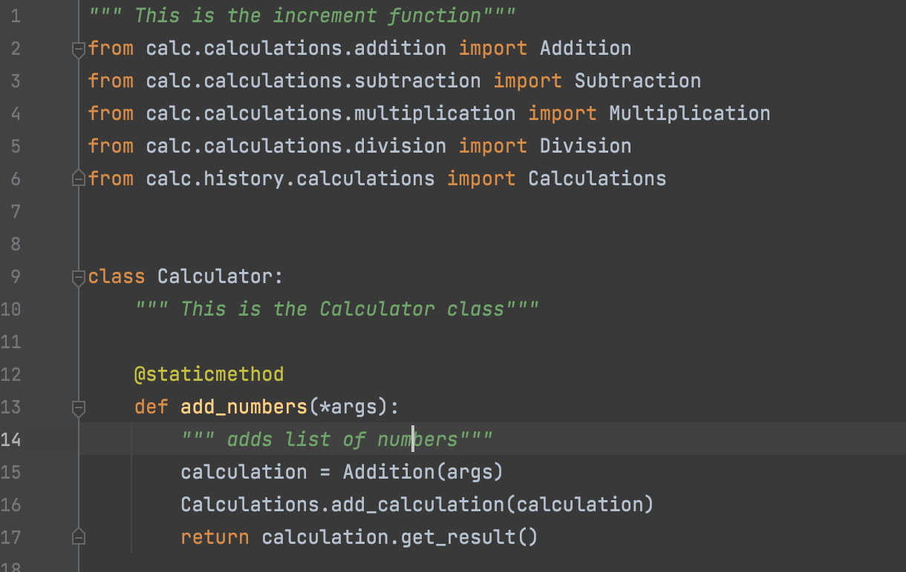

MAIN CONCEPTS OF OBJECT-ORIENTED PROGRAMMING (OOPS)
- Encapsulation: Grouping of Information
- Inheritance: Sharing of Information
- Polymorphism: Redefining of Information
- Abstraction: Hiding of Information
Encapsulation
Encapsulation is one of the fundamental concepts in object-oriented programming (OOP). It describes the idea of
wrapping data and the methods that work on data within one unit. This puts restrictions on accessing variables and
methods directly and can prevent the accidental modification of data. To prevent accidental change, an object’s
variable can only be changed by an object’s method. Those types of variables are known as private variable.
Protected members (in C++ and JAVA) are those members of the class that cannot be accessed outside the class but
can be accessed from within the class and its subclasses. To accomplish this in Python, just follow the convention
by prefixing the name of the member by underscore “_”.
Example of Encapsulation using the Calculation Class in Calculator Program

In the Calculation class of the Calculator program, we are using the def __init__ which is a reserved method in
python classes. It is called as a constructor in object-oriented terminology. This method is called when an
object is created from a class, and it allows the class to initialize the attributes of the class.
When a single "_" is used, that signifies a private variable, as we cannot explicitly define private in Python.
The "_values" is the nomenclature for encapsulation in the Calculation class.
We set the values as a tuple which means that they cannot be changed once applied.
The values in the calculation class cannot be changed
from outside and thus the above example clearly demonstrates Encapsulation
- class Operation:
- """Base class"""
- def __init__(self, values: tuple):
- self._values = Operation.convert_cal_input_to_float(values)
- class Addition(Operation, Result):
- """subclass Addition extending base Operation"""
- def get_output(self):
- """Adds the elements in tuple"""
- sum_of_elements = 0.0
- for value in self._values:
- sum_of_elements = sum_of_elements + value
- return sum_of_elements
Inheritance
Inheritance is the capability of one class to derive or inherit the properties from another class.
Inheritance provides re-usability of a code. We don’t have to write the same code again and again. Also,
it allows us to add more features to a class without modifying it. It is also transitive in nature, which
means that if class B inherits from another class A, then all the subclasses of B would automatically inherit
from class A.
Example of Encapsulation using the Addition Class in Calculator Program
In the above addition class, we are creating a function that will give us the sum of two or more values. This Addition class can now be inherited in other classes, we would not need to write the code to add two or more numbers again and the class can be inherited in other classes and be reused again and again.
Here we can see that the Addition class has been inherited by the Calculator class, and we are able to add two or more numbers in a completely different class i.e. the calculator class. In this case, the Addition class is the Parent class while the Calculator class is the child class. This is especially useful as different classes can be created for each of the calculator functions of addition, subtraction, multiplication and division. And then all of these classes can be inherited by the Calculator class.
- class Operation:
- """Base class"""
- def __init__(self, values: tuple):
- self._values = Operation.convert_cal_input_to_float(values)
- class Addition(Operation, Result):
- """subclass Addition extending base Operation"""
- def get_output(self):
- """Adds the elements in tuple"""
- sum_of_elements = 0.0
- for value in self._values:
- sum_of_elements = sum_of_elements + value
- return sum_of_elements
Polymorphism
The word polymorphism means having many forms. In programming, polymorphism means the same function name
(but different signatures) being used for different types.
In Python, Polymorphism lets us define methods in the child class that have the same name as the methods in
the parent class. In inheritance, the child class inherits the methods from the parent class.
Example of Polymorphism using the Multiplication Class in Calculator Program
In all the classes i.e. Addition, Subtraction, Multiplication and Division we use the get_result method. The get_result method has been used by all the classes to perform different functions. We can thus see that the get_result function is taking multiple forms. This is the demonstration of Polymorphism in Calculator program.
- class Operation:
- """Base class"""
- def __init__(self, values: tuple):
- self._values = Operation.convert_cal_input_to_float(values)
- class Result:
- """Base class"""
- @abstractmethod
- def get_output(self):
- class Addition(Operation, Result):
- """subclass Addition extending base Operation"""
- def get_output(self):
- """Adds the elements in tuple"""
- sum_of_elements = 0.0
- for value in self._values:
- sum_of_elements = sum_of_elements + value
- return sum_of_elements
- class Subtraction(Operation, Result):
- """subclass Subtraction extending base Operation"""
- def get_output(self):
- """subtracts the elements in tuple"""
- diff_of_elements = 0.0
- for value in self._values:
- diff_of_elements = diff_of_elements - value
- return diff_of_elements
Abstraction
An abstract class can be considered as a blueprint for other classes. It allows you to create a set of methods
that must be created within any child classes built from the abstract class. A class which contains one or more
abstract methods is called an abstract class. An abstract method is a method that has a declaration but does not
have an implementation. While we are designing large functional units we use an abstract class. When we want to
provide a common interface for different implementations of a component, we use an abstract class.
By default, Python does not provide abstract classes. Python comes with a module that provides the base for
defining Abstract Base classes(ABC) and that module name is ABC. ABC works by decorating methods of the base class
as abstract and then registering concrete classes as implementations of the abstract base. A method becomes abstract
when decorated with the keyword @abstractmethod.
Example of Abstraction using the Calculation Class in Calculator Program

The Calculation class is an abstract base class itself. Here we have created an abstract method i.e. get_result(), which on its own does not give any result, but we saw that the get_result() method is used in the child classes Addition, Subtraction, Multiplication and Division.
- """Abstract class"""
- from abc import abstractmethod, ABC
- class Result(ABC):
- """result for all the operations"""
- # pylint: disable=too-few-public-methods
- @abstractmethod
- def get_output(self):
- """this is the abstract method to be implemented by impl classes"""
- """Class for Addition Operation"""
- from calc.calculations.operation import Operation
- from calc.calculations.result import Result
- class Addition(Operation, Result):
- """subclass Addition extending base Operation"""
- def get_output(self):
- """Adds the elements in tuple"""
- sum_of_elements = 0.0
- for value in self._values:
- sum_of_elements = sum_of_elements + value
- return sum_of_elements